Recitales con piano
Programas de corno y piano para salas, auditorios e iglesias.
- Programa a medida y notas al programa
- De 60 a 90 minutos
Solista de corno, gestor cultural, profesor y organizador de eventos
Conciertos, eventos, proyectos culturales y clases de música desde Quito, Ecuador. La música cambia vidas.

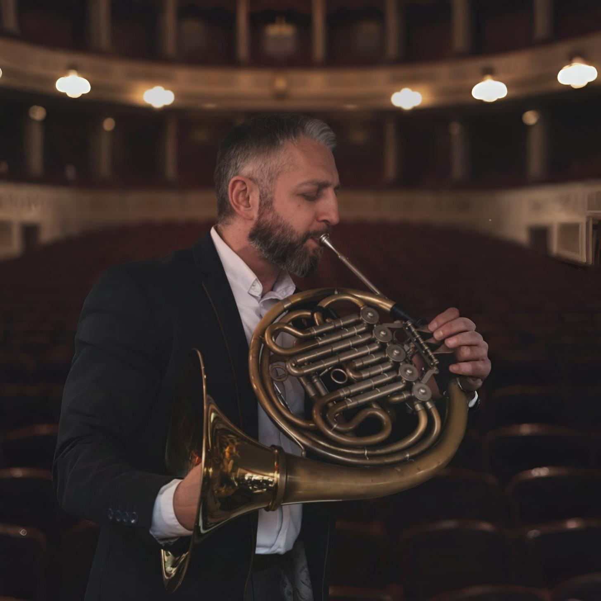
Tigran Ter-Minasyan pertenece a la cuarta generación de una familia de músicos armenios. Como solista ofrece recitales con piano y conciertos con orquesta de cámara, de vientos y sinfónica.
Su repertorio va de Bach y Vivaldi a Mozart y Glière, pasa por la música armenia de Komitas, Khachaturian y Babajanyan, y llega al jazz y al soul, siempre con el corno francés como voz principal.
Programas de corno y piano para salas, auditorios e iglesias.
Conciertos como solista con orquesta de cámara o banda sinfónica, con repertorio original y arreglos.
Conciertos para corno y orquesta del repertorio clásico y romántico.
Recital de corno
Música de cámara
Corno y jazz
Toca un cartel para verlo completo.
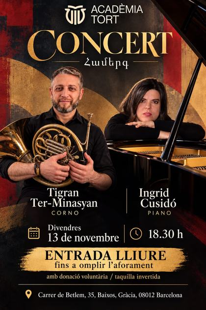
13 nov 2026
Acadèmia Tort, Barcelona
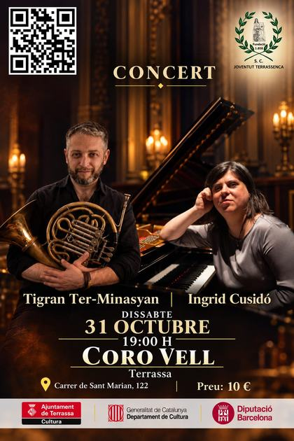
31 oct 2026
Coro Vell, Terrassa

28 jul 2026
Capilla UTE, Quito

22 ene 2026
Casa de la Música, Quito

13 feb 2025
Teatro Beethoven, Quito
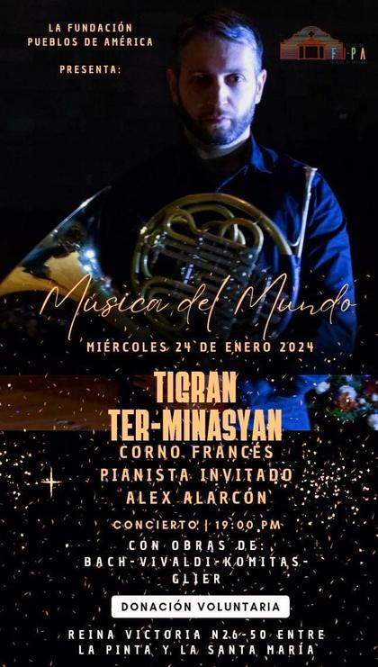
24 ene 2024
Fundación Pueblos de América, Quito
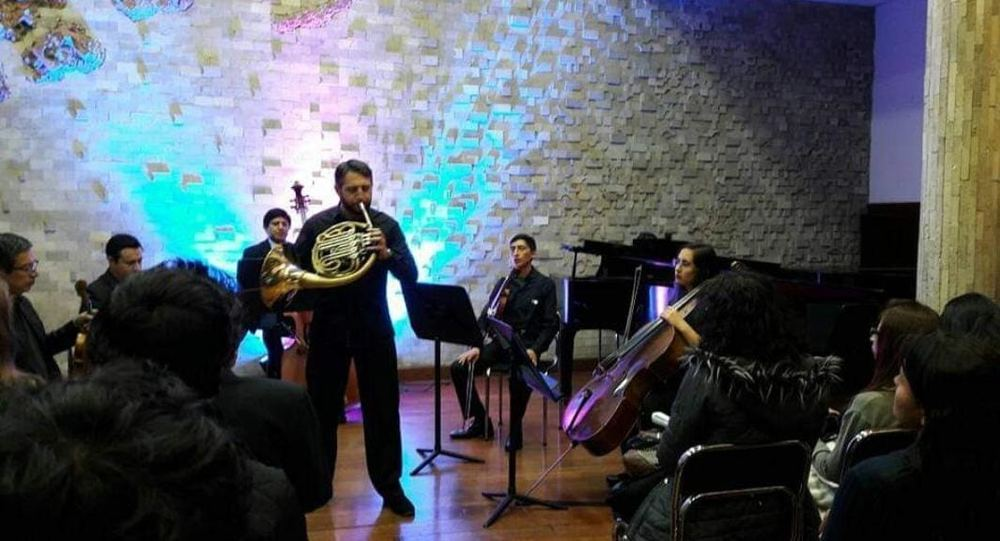
Tigran diseña y produce conciertos de principio a fin: concepto, programa, músicos, sala y puesta en escena.
Trabaja con pianistas, cantantes, guitarristas y percusionistas para formar el ensamble que cada ocasión necesita, de un dúo a un grupo de seis músicos.
Concepto, programa, músicos, técnica y difusión para conciertos en teatros, salas e iglesias.
Trío o cuarteto con piano y batería: baladas, jazz clásico y soul, con el corno como voz principal.
Música en vivo para galas, aniversarios, inauguraciones y celebraciones, con un repertorio pensado para el momento.
Corno con piano, voz, guitarra o percusión: el grupo justo para tu evento, de 2 a 6 músicos.

15 may 2026
Quito Jazz Club
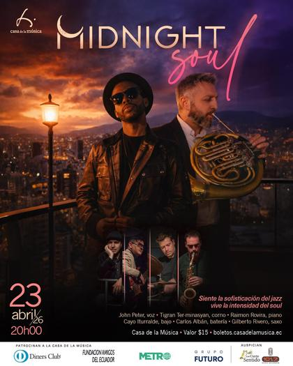
23 abr 2026
Casa de la Música, Quito
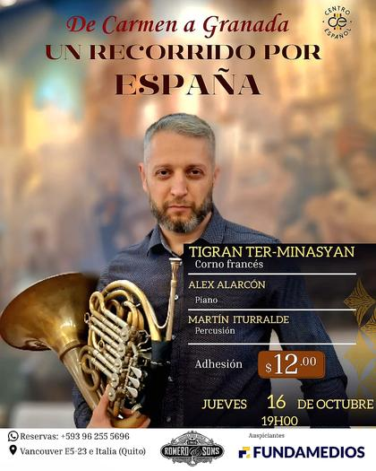
16 oct 2025
Centro Español, Quito
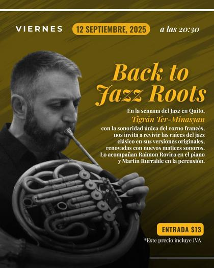
12 sep 2025
Quito

17 jul 2025
Centro Español, Quito
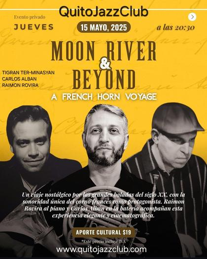
15 may 2025
Quito Jazz Club
Tigran crea ciclos y proyectos que acercan la música a nuevos públicos y tienden puentes entre culturas.
Ciclo de recitales con obras de Komitas, Khachaturian y Babajanyan, producido junto a Denis Daniilidis.
Conciertos de corno, órgano, voz y narración en iglesias del Centro Histórico de Quito.
Concierto homenaje al compositor griego, con dirección musical de Tigran.
Programas que unen la música armenia, griega, española y latinoamericana con el público de Quito.

14 may 2026
Teatro Beethoven, Quito

26 mar 2026
Iglesia de San Agustín, Quito

21–22 mar 2026
Iglesia de la Medalla Milagrosa e Iglesia del Carmen Alto, Quito
15 mar 2026
Iglesia Luterana El Adviento, Quito
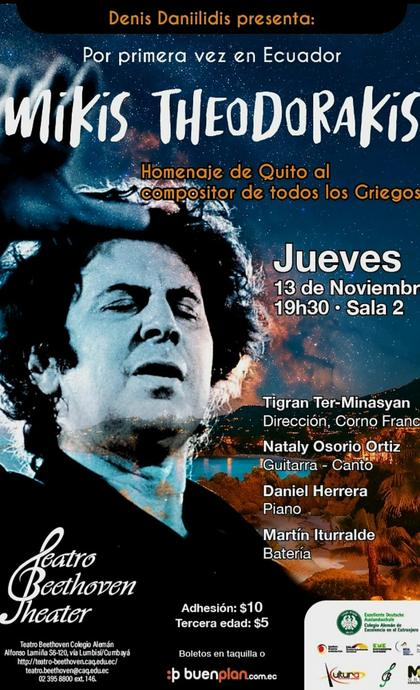
13 nov 2025
Teatro Beethoven, Quito
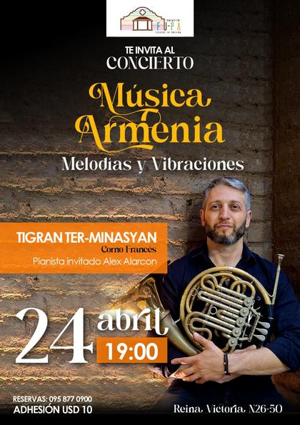
24 abr
Fundación Pueblos de América, Quito
TigranSoundLab
Música, personas, posibilidades
La música cambia vidas. TigranSoundLab es un puente entre la tradición y el mañana: un espacio para explorar, aprender, crear y conectar a través de la música.
Clases individuales centradas en tu repertorio y tus objetivos, con seguimiento de tu estudio entre clases. Escribe con tu nivel, el repertorio que trabajas y tu zona horaria.
Instrumentos que puedes aprender en la escuela
45 minutos sobre el repertorio que elijas: técnica, sonido, fraseo e interpretación.
Consultar por WhatsAppClases de 45 minutos cada semana, con revisión de tus grabaciones y un plan de estudio.
Consultar por WhatsAppClases para preparar una audición, un examen o un recital, con simulacro final.
Consultar por WhatsAppClase abierta de 2 a 3 horas con alumnos activos y oyentes: sonido, técnica, fraseo y preparación de repertorio.
La masterclass y, ese mismo día o al siguiente, un recital de corno y piano para la comunidad.

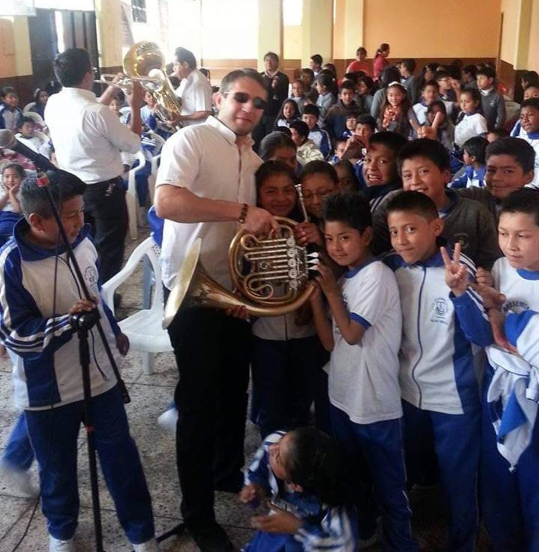
Un concierto explicado para que niños y jóvenes descubran el corno francés de cerca, con espacio para preguntas.
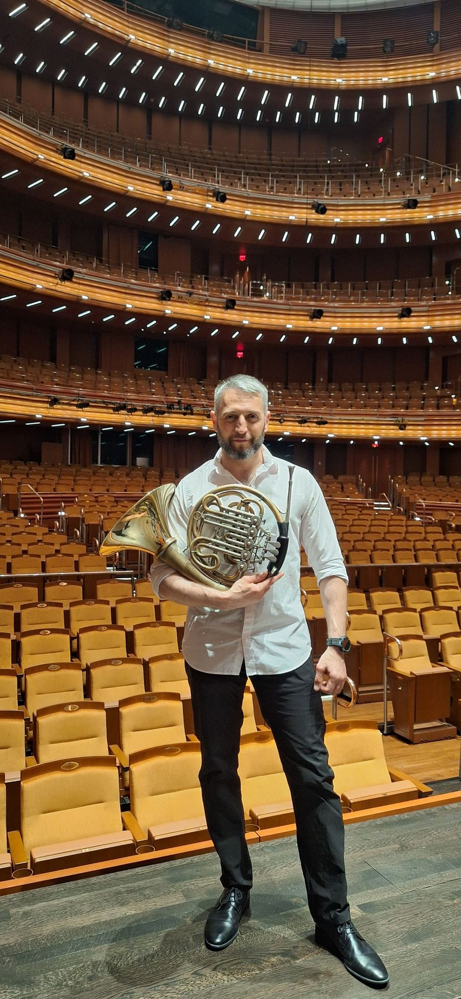
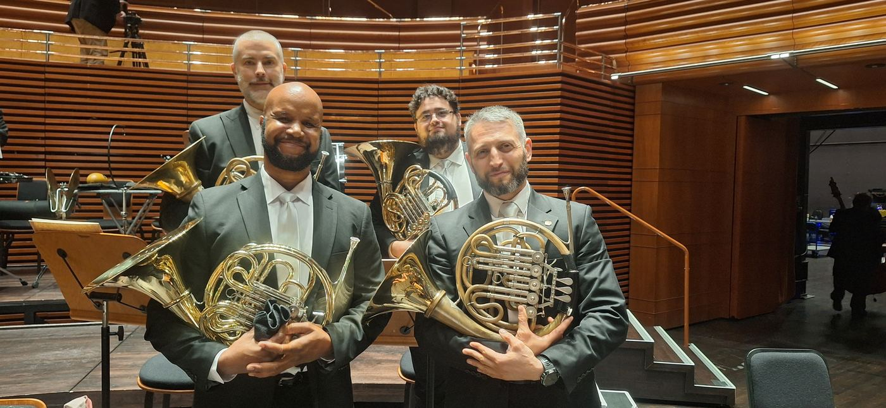
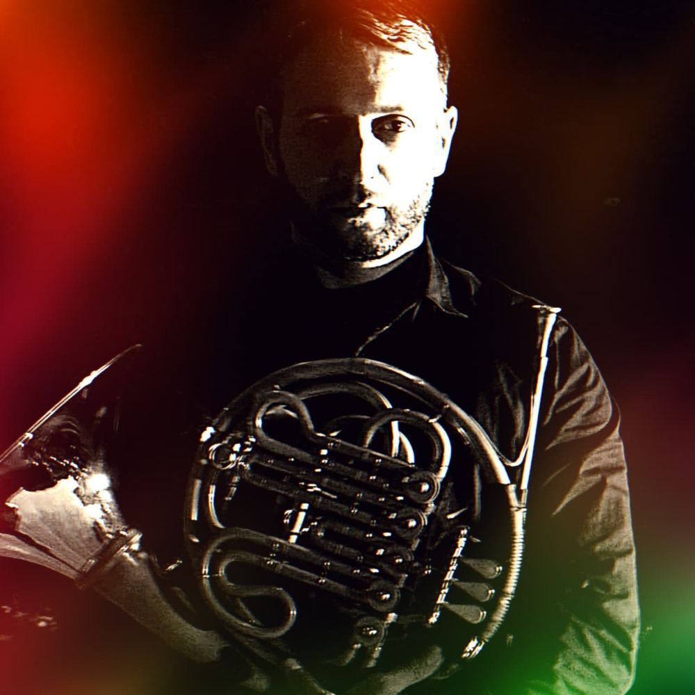
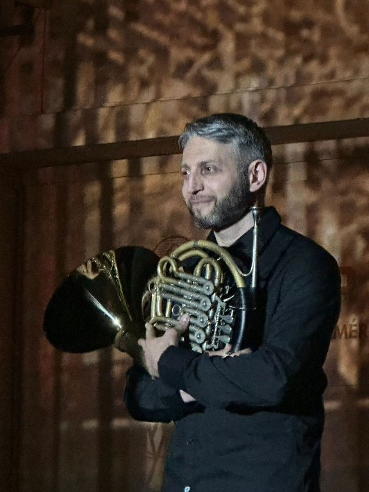
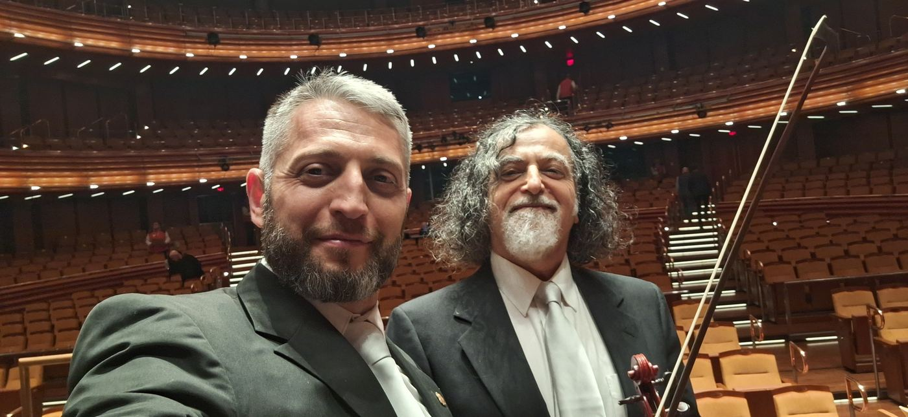
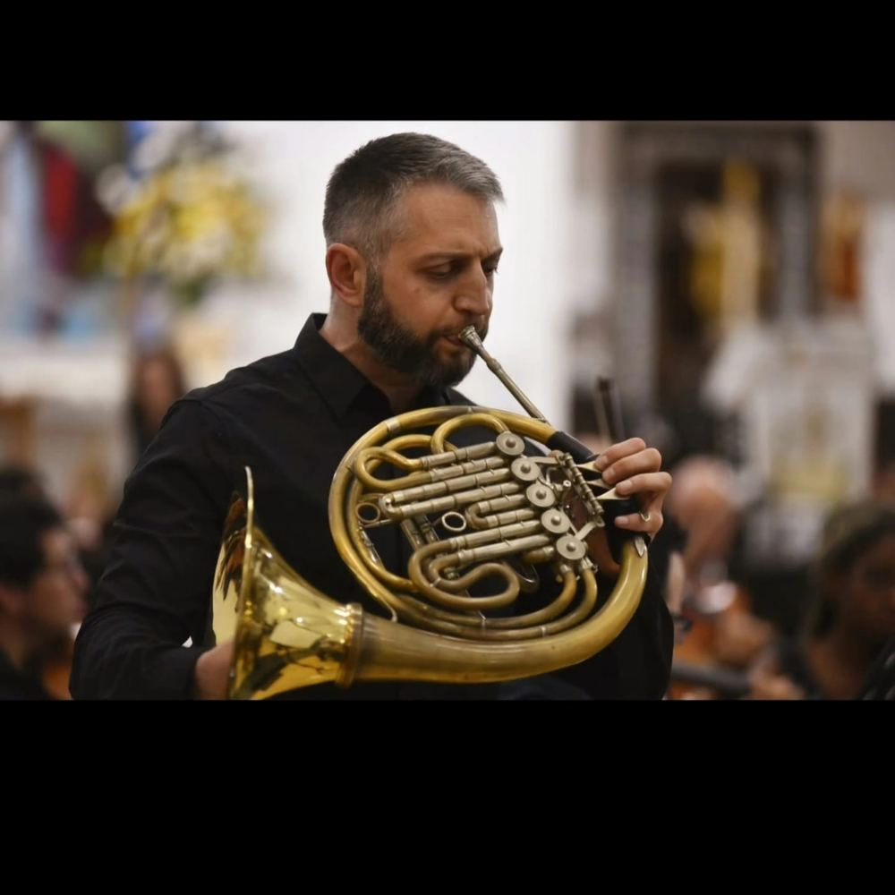
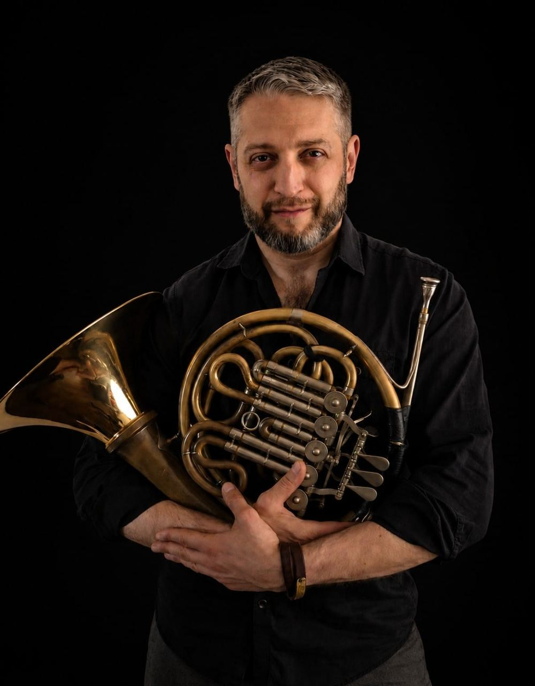

Para conciertos, eventos, proyectos culturales o clases, escríbeme y te respondo personalmente.
Con base en Quito, Ecuador. Clases online en todo el mundo.